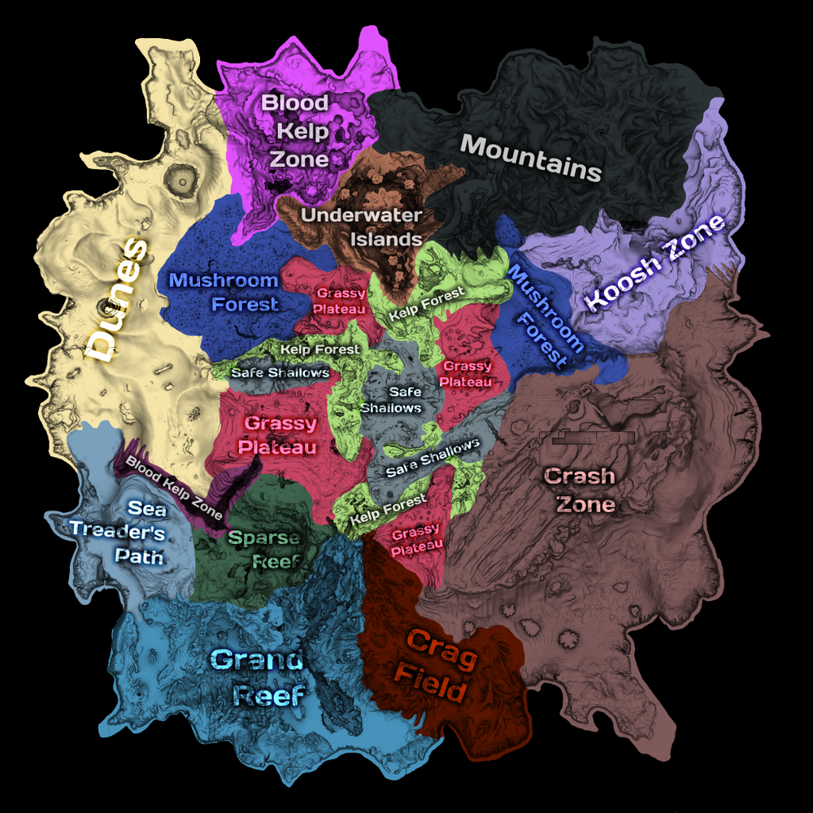

Biomas do SubNautica
- Biomas de Superfície
- Blood Kelp Zone (Zona de Algas Sangrentas)
- Bulb Zone (Zona do Bulbo)
- Crag Field (Campo de Pedras)
- Crash Zone (Zona do Acidente)
- Crater Edge (Borda da Cratera)
- Dunes (Dunas)
- Grand Reef (Grande Recife)
- Grassy Plateaus (Platôs Herbáceos)
- Kelp Forest (Floresta de Kelp)
- Mountains (Montanhas)
- Mushroom Forest (Floresta de Cogumelos)
- Safe Shallows (Áreas Rasas Seguras)
- Sea Treader's Path (Caminho dos Andadores do Mar)
- Sparse Reef (Recife Escasso)
- Underwater Islands (Ilhas Submersas)
- Biomas de Cavernas
- Blood Kelp Caves (Cavernas de Algas Sangrentas)
- Bone Fields Caves (Cavernas dos Campos de Ossos)
- Bulb Zone Caves (Cavernas da Zona do Bulbo)
- Deep Grand Reef (Grande Recife Profundo)
- Deep Sparse Reef (Recife Escasso Profundo)
- Dunes Caves (Cavernas das Dunas)
- Grand Reef Caves (Cavernas do Grande Recife)
- Grassy Plateaus Caves (Cavernas dos Platôs Herbáceos)
- Inactive Lava Zone (Zona de Lava Inativa)
- Jellyshroom Cave (Caverna das Medusas Cogumelo)
- Kelp Forest Caves (Cavernas da Floresta de Kelp)
- Lava Lakes (Lagos de Lava)
- Lost River (Rio Perdido)
- Mountain Range Caves (Cavernas da Cadeia de Montanhas)
- Mushroom Forest Caves (Cavernas da Floresta de Cogumelos)
- Safe Shallows Caves (Cavernas das Áreas Rasas Seguras)
- Sea Treader's Tunnel Caves (Cavernas dos Túneis dos Andadores do Mar)
- Underwater Islands Caves (Cavernas das Ilhas Submersas)
- Mini-Biomas
- Crash Zone Mesas (Mesas da Zona do Acidente)
- Lava Geyser (Geyser de Lava)
- Lava Castle (Castelo de Lava)
- Inactive Lava Zone Corridor (Corredor da Zona de Lava Inativa)
- Ilhas
- Floating Island (Ilha Flutuante)
- Mountain Island (Ilha Montanha)
Fonte: fandom SubNautica

Clique na imagem para ampliar
Biomas do SubNautica Below Zero
- Biomas Terrestres
- Arctic Pinnacles (Pináculos Árticos)
- Delta Island (Ilha Delta)
- Glacial Basin (Bacia Glacial)
- Glacial Bay (Baía Glacial)
- Biomas Aquáticos
- Arctic (Arctic)
- Arctic Kelp Forest (Floresta de Kelp Ártica)
- Lilypad Islands (Ilha dos Lírios)
- Purple Vents (Ventos Roxos)
- Shallow Twisty Bridges (Pontes Torcidas Rasas)
- Sparse Arctic (Ártico Escasso)
- Thermal Spires (Torres Térmicas)
- Tree Spires (Torres de Árvores)
- Twisty Bridges (Pontes Torcidas)
- World Edge (Borda do Mundo)
- Cavernas Subaquáticas
- Arctic Kelp Caves (Cavernas de Kelp Árticas)
- Crystal Caves (Cavernas de Cristal)
- Deep Lilypads Cave (Caverna das Lilás Profundas)
- Deep Purple Vents (Ventos Roxos Profundos)
- Deep Twisty Bridges (Pontes Torcidas Profundas)
- Fabricator Caverns (Cavernas do Fabricador)
- Glacial Connection (Conexão Glacial)
- Koppa Mining Site (Local de Mineração Koppa)
- Lilypads Crevice (Fenda das Lilás)
- Thermal Spires Caves (Cavernas das Torres Térmicas)
- Twisty Bridges Caves (Cavernas das Pontes Torcidas)
- Mini-Biomas
- Blue Ice Caves (Cavernas de Gelo Azul)
- Crystal Castle (Castelo de Cristal)
- Crystal Caves Fissure (Fissura das Cavernas de Cristal)
- Dark Caves (Cavernas Escuras)
- Glacial Forest (Floresta Glacial)
- Ice Fissure (Fissura de Gelo)
- Ice Floes (Flutuantes de Gelo)
- Great Tree Pinnacle (Grande Pináculo da Árvore)
- Lava Geysers (Gêiseres de Lava)
- Lilypad Caves (Cavernas dos Lírios)
- Phi Excavation Site (Local de Escavação Phi)
- Temperate Caves (Cavernas Temperadas)
- Tree Towers Fissure (Fissura das Torres das Árvores)
- Subaquatic Caves (Cavernas Subaquáticas)
Fonte: fandom SubNautica
Clique na imagem para ampliar